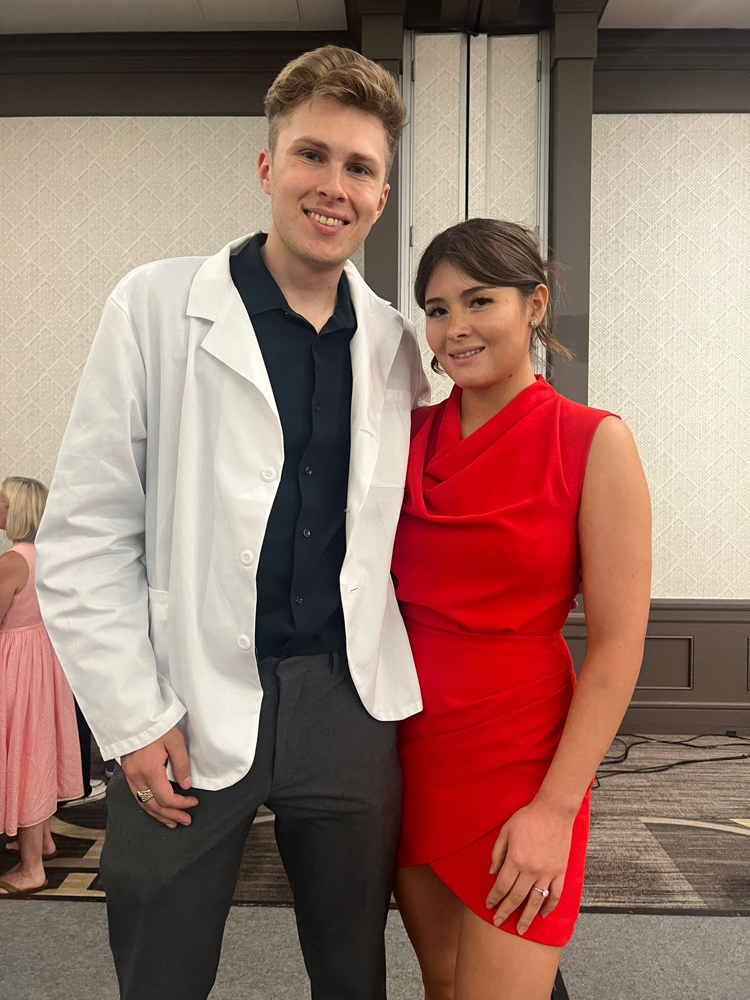

Rafaela Garcia | WDD 130
Hello visitor, my name is Rafaela Garcia. I have been married for one year, and in my spare time, I enjoy calisthenics and fermenting foods.
Hello visitor, my name is Rafaela Garcia. I have been married for one year, and in my spare time, I enjoy calisthenics and fermenting foods.